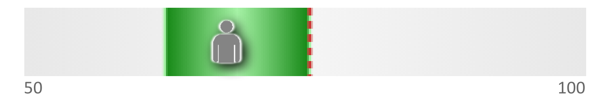

NE
At Rest
Neural efficiency at rest
MMSE r = −0.34

A healthy brain shows low NE at rest — the default-mode network is disengaging cleanly, conserving resources. Elevated resting NE indicates chronic compensatory over-recruitment.
⚠ If elevated
Impaired DMN disengagement — chronic cortical over-recruitment. Assess for anxiety, sleep disruption, or early cognitive decline.
NFB resting NE reduction · sleep assessment · mindfulness protocols.